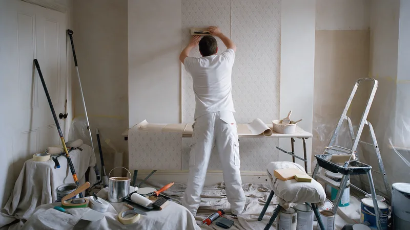
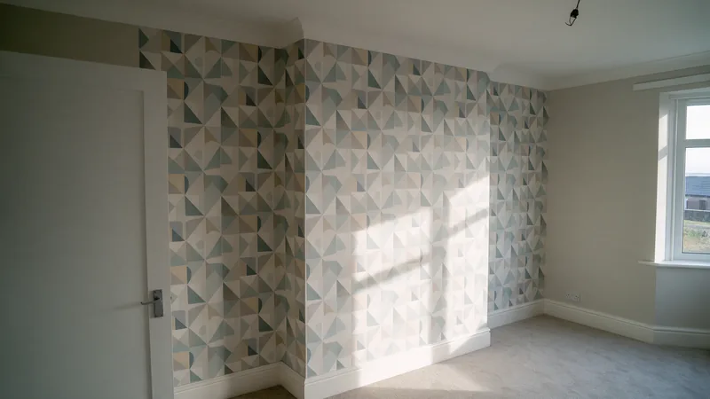

The wall under the paper matters more than the paper
Paper does not hide a bad wall, it reports on it. A lump under paper is a lump with a shine on it, and a wall that is powdery or glossy will not hold paste for long. So the wall gets washed, filled and sanded the same way it would for paint, and anything chalky gets sealed.
Where a wall is poor, or where a heavy paper is going on a patchy surface, it gets lined first, horizontally, so the lining joints never land under the paper joints. It adds a day. On the wrong wall, it is the difference between paper that stays flat and paper that shows every seam by spring.
Why nothing is hung off the corner
No corner in a British house is plumb. Hang the first length tight against one and every length after it leans a little further, until the pattern is running uphill by the time you reach the far side.
So the first length goes off a line plumbed on the wall, and the corner gets the cut. On a patterned paper the starting point also gets chosen so the pattern lands sensibly on the main wall and the chimney breast rather than wherever the roll happens to begin. That decision takes five minutes at the start and is invisible if it is right.
Matching, and the honest bit about corners
A straight match or a drop match on a flat run should be invisible when it is done, and that is what you should expect. Internal and external corners are the exception everywhere, in every house, because the walls are not square. A corner is always a small overlap or a small cut, and a tiny break in the pattern there is normal rather than a mistake.
Anything with a big repeat uses noticeably more paper than the calculator on the back of the roll suggests, because every length has to start in the right place in the pattern. We will work out the rolls at the quote, and we would always rather order one spare than run out halfway up a chimney breast with a batch that has sold out.

Generated photoGenerated for this demo. Not a photograph of a real job.

Generated photoThe seams are the test. On a flat run you should not be able to find them.
On the job
How this one usually goes.
- Strip, wash and make goodOld paper off properly rather than skimmed over, the wall washed down, filled and sanded, and anything chalky or glossy sealed or keyed.
- Line it where it needs itLining paper hung horizontally on a poor wall so the joints cross rather than follow, then left to dry before anything else happens.
- Plumb the first lineA line plumbed on the wall, the pattern placed so it lands well on the wall you look at, and the corners planned to take the cut.
- Hang, match and rollPaste on the paper or the wall depending on the paper, hung, smoothed from the middle out to get the air away, matched at each seam and the seams rolled where the paper allows it.
- Trim, wipe and put backTrimmed sharp at the skirting, the coving and the frames, paste wiped off the surface before it dries, plates and fittings back on.
A sample running order for this demo. Yours depends on the property and what the surfaces turn out to be doing.
Questions
Asked about this job.
Do I need lining paper?
Not always. A sound, flat, previously painted wall will usually take paper straight on. A patchy wall, a wall that has had paper off it in lumps, or a heavy or thin paper that will telegraph everything underneath, all want lining first.
Can you paper over what is there now?
We would rather not, and on most jobs we will say no. Paper over paper means the new paste wets the old paper and both layers can lift together. Stripping is a dull day and it is the one that makes the rest of it work.
How many rolls will I need?
We work it out at the quote from the wall heights and the pattern repeat, and a big repeat always needs more than the back of the roll suggests. Order a spare and keep it. Batches change, and a patch from a different batch is a visible patch.
Will the seams show?
On a flat run, they should not. In corners there is always a small overlap or cut because no corner is square, and a slight break in the pattern there is normal in every house, not a sign anybody got it wrong.
Can you hang paper I have bought?
Yes, and most people do. Bring it, with all the rolls from the same batch, and tell us the pattern repeat if it is on the label. If there is any doubt about whether there is enough, we would rather check before we start than halfway along.
General trade knowledge written for this demo, not advice on your property.
Our work
Sample jobs like this.
 Generated photoLaying off a long wallPoulton-le-Fylde · Sample
Generated photoLaying off a long wallPoulton-le-Fylde · SampleMade up samples with generated pictures. Tap one for the detail.
Also
The other things we do.
Interior painting
Walls, ceilings and the bits either side of them. Filled, caulked, sanded and dusted off before a drop of paint goes on, then laid off properly.
More →Exterior painting
Render, pebbledash and masonry out front, and the timber that holds it all together. Done in the right months, on a dry wall, in the right order.
More →Woodwork and doors
Skirtings, architraves, window boards, spindles and doors. Sanded flat, knotted and primed where it is bare, then brushed so you cannot find the laps.
More →Kitchen cabinet painting
Doors off, degreased, keyed, primed for the surface they actually are, then two thin coats. A new looking kitchen without a new kitchen.
More →Commercial and rental refreshes
Empty flats, offices, salons and holiday lets. Worked round the keys and the cleaners rather than round us, and left ready to photograph.
More →Shall somebody come and look at it?
Tell us which rooms and your postcode. Twenty minutes with a light held along the wall tells us more than any photograph.